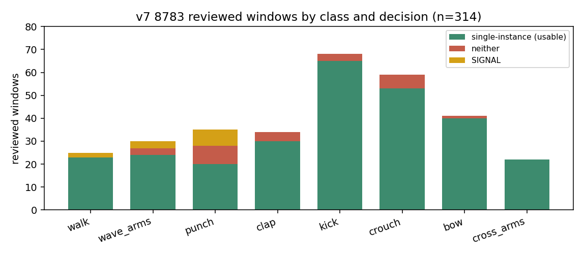
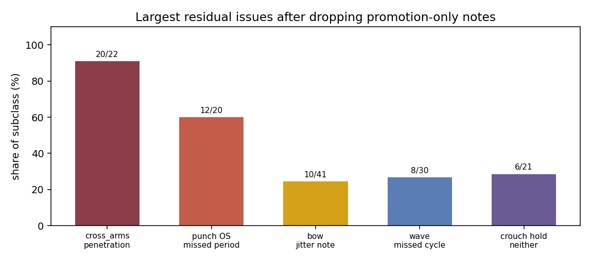
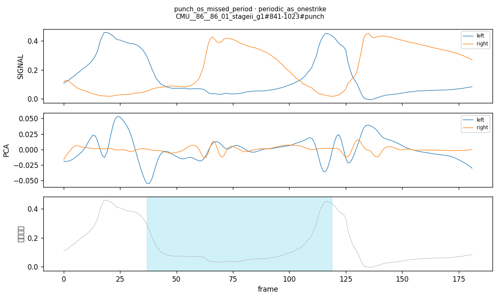
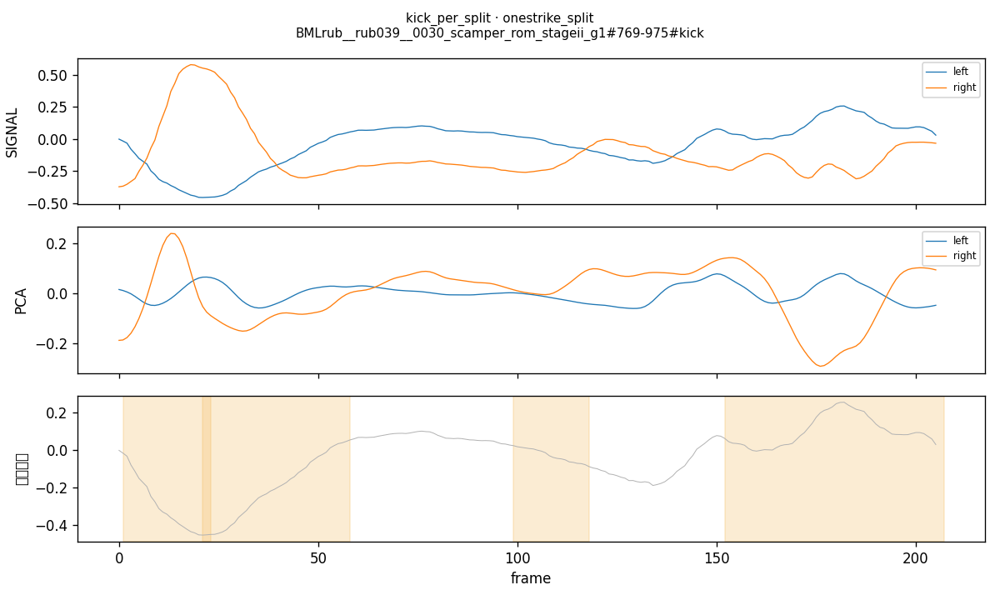
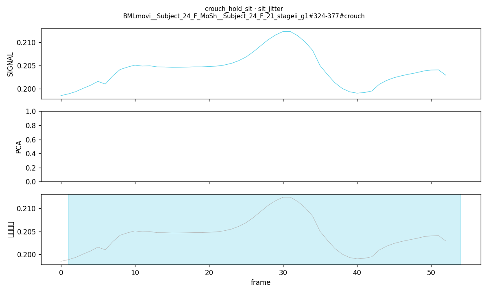
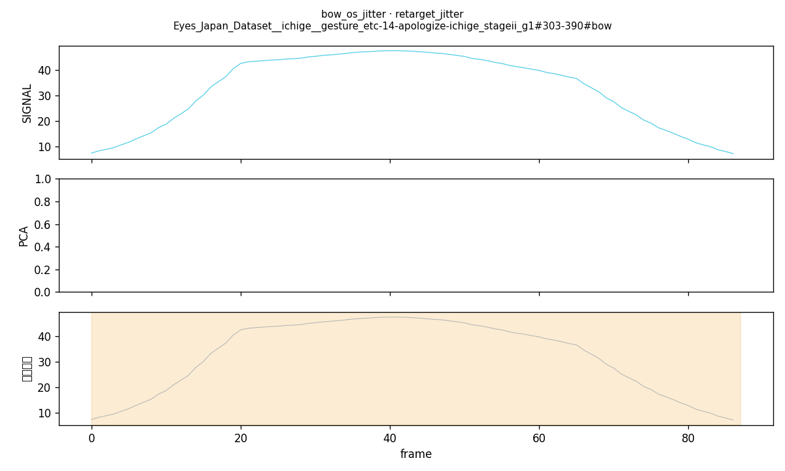
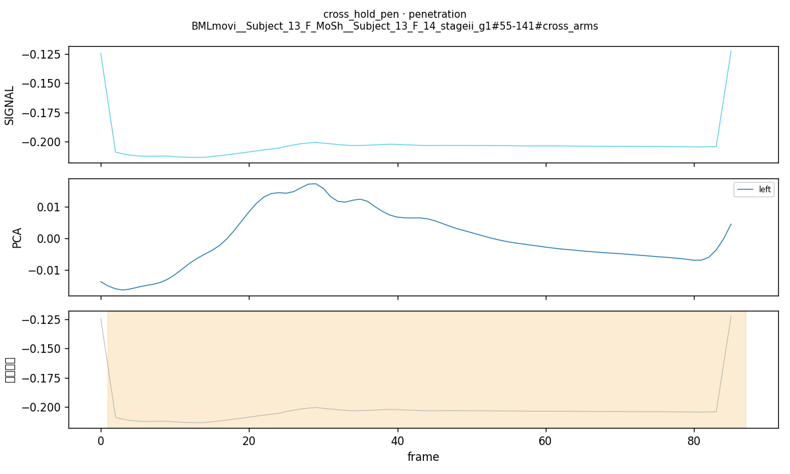
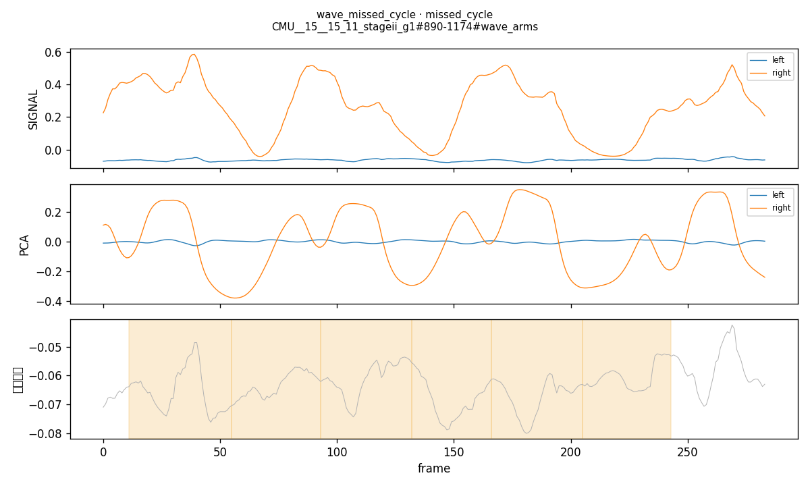
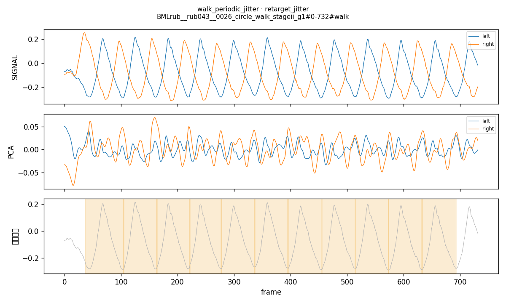
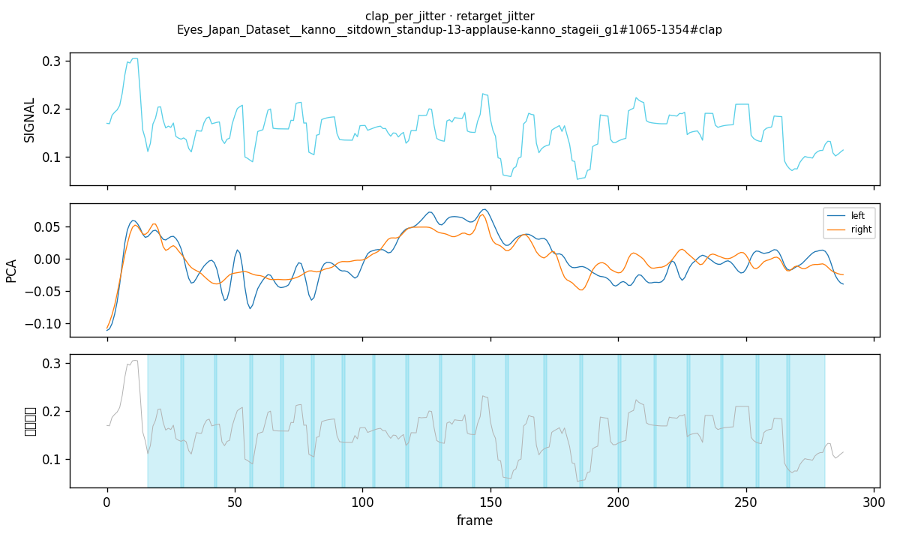

Generated from Markdown source: docs/report/2026-09-04-v7-8783-review-digest-and-cutter-characteristics.md
v7 8783 已审窗消化与切刀特性
Date/scale:
2026-09-04 / babel_soma_semantic_clean_v7_final；已审 314 窗（空判定 2 条丢掉）
Output profile:markdown-project-report（用户要求图文浏览，另渲染 HTML）
Results profile:dataset-verifier
Verdict:PASS（当前已审样本可用；审查未完成）
在 8783 对照台上读完 v7 已审窗的判定与 comment，并把 walk / hold-crouch / punch-clap / kick 的刀合同写清。用户裁定：当前样本 PASS，但还需要继续审查。
1. Conclusion
PASS——已审 314 窗里单次实例可用占多数；残余问题集中，审查未关账。
- Decisive evidence: Results 主表合计行与图 1。单次实例可用占多数，都不对是少数且集中在 punch / crouch / clap / wave。
- Counter-signal or limitation: 图 2 的残余集中项。wave_arms 仍待 Nolan 复核。
- Not shown: 未审窗的质量；kick 审查页队列尚未按 0.8 s 双脚着地规则改分；本报告不是训练评测。
- Decision: 包可以继续当对照与审查对象。不据此开训。继续审未审窗，并复核 punch / kick 模式混入与 retarget 瑕疵。
2. Problem and terminology
v7 八类 50 Hz 包在 8783 上，已审窗是否够用，刀合同是否与审查纸条一致，还剩哪些必须再审的问题？
| Term | Operational definition in this report | Scope / not to confuse with |
|---|---|---|
| 单次实例 | v7 导出的一条 unit；本报告投票名 lingfanb。无有效 note = 可用且干净；有有效 note = 可用有瑕疵 |
审查页按手/按脚拆开的色块；不是 PCA |
| SIGNAL | 8783 上的标量周期对照轨 | 不是可部署切刀；SIGNAL 票 = 单次实例还不够好 |
| PCA | 只作对照波形，不记投票 | 不是本轮选定切刀 |
| 蓝框 | review_required 待审描边。顺着蓝框做的总结无参考意义 |
橙色 candidate；只有 candidate 本身有用 |
| 有效 note | 剥掉「候选对但没被选上 / 没晋级」之后仍剩的 comment | 晋级-only 31 条不当瑕疵 |
| 完整步幅 | 两脚各迈一次（L-R-L 或 R-L-R 取最早结束、不重叠的一族） | 左脚一条、右脚一条 |
| hold | 骨盆低于标称站高 ≥ 6 cm，且 |vz| ≤ 0.08 m/s，连续 ≥ 1.00 s | 全身冻住；手不能动 |
| punch/clap 真 one-strike | 本窗只有 1 条单次实例；≥ 2 条整窗进 periodic | v7 字段 one_shot / temporal_type |
| kick 复位 | 双脚着地 → 踢 → 再双脚着地，且下一次踢前双脚空档 > 0.8 s 才算 one-strike。悬空停不算复位 | punch 收回准备位即闭合；前端 kick 队列仍跟 unit temporal_type |
3. Method
| Item | Setup |
|---|---|
| Task/data | babel_soma_semantic_clean_v7_final，八类 50 Hz；审查库 pca_tf_review_v7.sqlite3 |
| Target | 窗级最新判定 + 有效 note；蓝框不进结论 |
| Evaluation | 已审全数 314 窗（最新判定非空）。模式：walk / wave_arms = periodic；punch / clap / kick ≈ 本窗单次实例条数 1 vs ≥2；crouch / bow / cross_arms = hold vs one-strike（按 hold / one_shot 条数） |
| Evidence profile | outputs/soma_retarget_review/v7_review_digest/{groups,inventory,examples}.json；刀合同 data/BABEL_SOMA_G1/2026-0903-observation-motion-characteristics.md |
| Criterion | Threshold | Measured | Verdict |
|---|---|---|---|
| 已审窗单次实例可用（↑） | 用户裁定：当前样本可通过 | 277/314（88.2%） | PASS |
| 都不对（↓） | 无预注册上限；集中度见 Results | 25/314（8.0%） | PASS |
| 刀合同已落盘 | walk 步幅、hold-crouch、punch/clap 按窗条数、kick ≠ punch | 四条均已写入特性页 | PASS |
| 审查是否关账 | 用户要求继续审 | 未审窗未覆盖；wave 待 Nolan；kick 队列未改 | MARGINAL |
Differences and Run Spec
Differences from prior setup
- 审查包从
babel_soma_eight_actions_review_20260831T130654Z换成 v7 final。 - 晋级-only note 不再当瑕疵。
- punch / clap 审查队列按本窗单次实例条数，不跟 v7
temporal_type。 - kick 时间类型按双脚着地空档 0.8 s；8783 前端尚未改。
Run Spec
NOT PREREGISTERED — no confirmed Run Spec found after searching: docs/plans/、docs/PROTOCOLS.md、data/SOMA-BABEL/、data/BABEL_SOMA_G1/。本轮是已审窗事后消化 + 刀合同归档。判据表是用户 2026-09-04 当场裁定，不是预先冻结线。
4. Results
采样：已审窗全数，窗级最新判定。聚合：一窗一行。抖动 = 有效 note 含 抖 / 抽动 / jitter / rtgt / retarget。
| 动作 | 已审窗 | 单次实例 ↑ | 都不对 ↓ | SIGNAL | 有效 note | 抖动 note |
|---|---|---|---|---|---|---|
| walk | 25 | 23 | 0 | 2 | 5 | 4/25 |
| wave_arms | 30 | 24 | 3 | 3 | 14 | 3/30 |
| punch | 35 | 20 | 8 | 7 | 17 | 0/35 |
| clap | 34 | 30 | 4 | 0 | 9 | 3/34 |
| kick | 68 | 65 | 3 | 0 | 18 | 1/68 |
| crouch | 59 | 53 | 6 | 0 | 11 | 8/59 |
| bow | 41 | 40 | 1 | 0 | 10 | 10/41 |
| cross_arms | 22 | 22 | 0 | 0 | 20 | 0/22 |
| 合计 | 314 | 277 | 25 | 12 | 104 | 29/314 |
图 1：已审窗按动作与判定。绿 = 单次实例可用。punch 是都不对与 SIGNAL 最集中的类。

图 2：去掉晋级句之后最大的残余问题。决定「还要再审」的是这几档，不是全包均匀差。

切刀合同（与纸条对齐，实现未改标签）：
- walk unit = 有位移的完整步幅（踝世界位移 ≥ 4 cm）。原地踏转可以无 unit；边走边转可以进池。
- hold-crouch = 稳住的低姿，不是冻住。手无单独否决；甩臂常把骨盆 |vz| 抬过 0.08 m/s。
- punch / clap：一下一条；审查队列看本窗条数。收回准备位是这一下的闭合。
- kick：单腿连踢或悬空停仍是 periodic。幅度大时助跑侧腿会被算进周期。
5. Analysis
- Finding: 主表上多数已审窗投单次实例。图 2 的残余按类分开：cross_arms 是 retarget 穿模；punch one-strike 是漏周期把连打丢进该队列；bow / walk / crouch 抖动是质量 note，多数仍标可用。
- Working interpretation: 刀合同与纸条一致。kick one-strike 与 bow hold 在已审子集上几乎全是单次实例且无大问题 note，和纸条「hold-bow 没问题」对齐。punch 主因不是抖动。
- Unknown: wave_arms 水平周期、漏切、driver-hand 前端不可见，仍待 Nolan 后复核。kick 前端仍按
temporal_type排队，与 0.8 s 裁定不一致的窗数未重算。 - Next: 继续审未审窗。优先 punch 模式混入、kick 队列与助跑腿、crouch sit / 穿模、bow jitter、cross_arms 穿模。wave 等 Nolan。不开训。
6. Appendix
Terms, calculations, evidence, and reproduction
Worked examples
usable = 23+24+20+30+65+53+40+22 = 277
neither = 0+3+8+4+3+6+1+0 = 25
SIGNAL = 2+3+7+0+0+0+0+0 = 12
277 + 25 + 12 = 314
usable rate = 277/314 = 0.8822 → 88.2%
jitter = 4+3+0+3+1+8+10+0 = 29
jitter rate = 29/314 = 0.0924 → 9.2%
promo-only dropped = clap periodic 21 + punch periodic 10 = 31
Cutter characteristics（摘要）
来源：data/BABEL_SOMA_G1/2026-0903-observation-motion-characteristics.md。
walk 实现：src/data_audit/walk_complete_stride.py，配置 cvpr_workspace/configs/walk_complete_stride_v1.json。
hold-crouch：src/data_audit/full_action_recut.py 的 posture_units；whole_body_stillness_required = false。
punch/clap 队列：outputs/soma_retarget_review/clap_pca_tf_webapp/index.html 的 typeCount。
kick 切边界：kick_periodic.py（双脚是否同时着地分尺）。时间类型以特性页为准；书面标准 §4.2 与标签未改。
Representative waveforms
橙带 = candidate；青带 = 蓝框待审。PCA 轨只对照。
punch one-strike 漏周期（CMU__86__86_01#841-1023）：

kick 一下拆成两周期（BMLrub__rub039#769-975）：

crouch hold 混 sit + 膝抖（BMLmovi Subject_24_F_21#324-377）：

bow one-strike rtgt jitter（ichige apologize#303-390）：

cross_arms 手臂穿模（BMLmovi Subject_13_F_14#55-141）：

wave 漏切（CMU__15__15_11#890-1174）：

walk 上肢/全身轻微抖动（BMLrub rub043 circle_walk#0-732）：

clap periodic 严重 jitter、周期趋势仍对（kanno applause#1065-1354）：

逐原因表与全部 comment：data/BABEL_SOMA_G1/2026-09-04-v7-review-digest.md。
Evidence and commands
- Evidence:
outputs/soma_retarget_review/v7_review_digest/groups.json - Inventory:
outputs/soma_retarget_review/v7_review_digest/inventory.json - Examples:
outputs/soma_retarget_review/v7_review_digest/examples.json - Waveforms:
outputs/soma_retarget_review/v7_review_digest/waveforms/ - Reviews:
data/processed/soma_retarget_review/pca_tf_review_v7.sqlite3 - Serve:
scripts/serve_clap_pca_tf_review.py - Prior 8783 reports:
docs/report/2026-09-01-soma-periodic-motion-segmentation-tf-ssa-report.md，docs/report/2026-09-02-soma-periodic-cutter-review-round-archive.md
审查纸条（已确认）
- crouch hold：sit、膝抖、手↔腿穿模、少量起身、踮脚浮空
- cross_arms：手臂穿模
- hold-bow：没问题
- walk：转身不含周期；上肢抖动是小比例
- punch：guard / 拉手漏到另一只手；one-strike 里混入漏周期的 periodic
- kick：periodic ↔ one-strike 互混；助跑侧腿；骨盆相对地动时一下被拆成两周期
- clap：穿模、坐姿
- bow one-strike：retarget jitter
- wave_arms：初步判断为水平周期；竖直分量少；易漏切；driver-hand 前端不可见